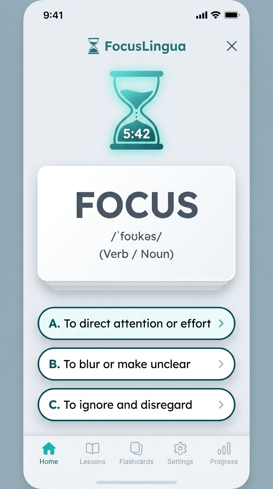
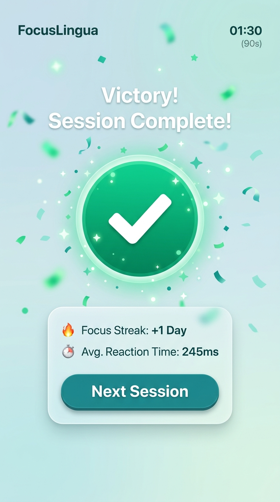

專為注意力不集中 (ADHD) 及閱讀障礙 (Dyslexia) 學習者設計的「90秒微感官英語學習應用程式」。利用視覺字型優化、聽覺減壓背景音及觸覺多巴胺即時反饋，解決目標受眾在傳統學習中容易焦慮、分心及認知負荷過載的痛點。
從使用者角度出發，我們界定了以下核心情境與驗收標準：
故事 1 (ADHD 學習者)：
作為一名注意力易分散的成人，我希望每次學習單元控制在 90 秒內且有視覺化計時，使我不會因為課程過長而產生焦慮或直接放棄。
故事 2 (閱讀障礙學生)：
作為一名閱讀障礙學生，我希望網頁能切換為 OpenDyslexic 字型與可調間距，讓我能清晰辨識單字字母而不跳行。
故事 3 (特教輔導員/家長)：
作為一名家長，我希望查看孩子的專注度反應時間分析，以便瞭解何種學習刺激對他最有效。
把故事拆成可執行的功能、規劃與優先度：
三層分工分立設計：
狀態流動流程：開啟 App (Idle) ➡️ 載入關卡與背景音 (Loading) ➡️ 進行 90s 限時挑戰 (Focus Active) ➡️ 單字呈現 (Word Show) ➡️ 拖曳/連線互動 (Interaction) ➡️ 多巴胺勝利慶賀 (Celebration)。


本專案包含以下多感官多媒體素材，以保障學習障礙者的感官協作：
/assets/fonts/)。success_pop.wav 啵啵回饋聲 (採集自 ASMR 減壓音效庫)。